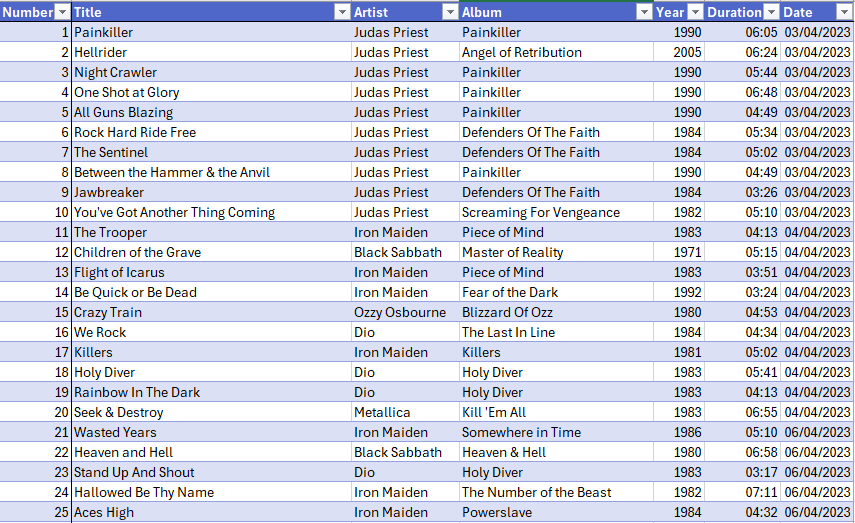
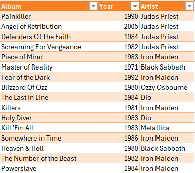

Playlist Project
This is a project I have been working on in my free time, based on a playlist of 109 songs (at time of writing) that I have been putting together over the course of a year. I was interested in seeing which artist appeared in the playlist the most, as well as checking whether there were any patterns in when I added songs, and how long the average song in the playlist was. While a year's worth of data is presented here, the project is designed with automation in mind so that I can expand on this over time.
In order to keep data visible and images an acceptable size, only a sample of the tables I created is shown here.
The spreadsheet in its entirety is available for download here on my GitHub.
The Data

In order to analyse the playlist, I first had to input the data I required into Excel. I kept the song number as a means of ensuring nothing was missed, alongside the title, artist, album, release year and duration of each song and the date I added it to the playlist. For ease of constructing functions later, I named this table Songs. Since the artist and release year was the same for songs in the same album, I decided to create a second table, named AlbumInfo, that contained this information. I then used VLOOKUP in the Artist and Year columns, meaning they automatically filled out when I put in the name of an album. While the entire process couldn't be automated, having fewer values to type repeatedly made things simpler.
The function used for the Artist column is as follows:
=VLOOKUP([@Album],AlbumInfo[#All],3,FALSE)
This function takes values from the Album column of the Songs table, searches for them in the AlbumInfo table and returns the matching value from the third column. It only accepts exact matches, and will return an error for any album that hasn't been added or has been misspelled.
Since there were many instances of songs being added in groups on the same day, I could frequently copy the value over without individually typing it.
Preparation and Presentation
Once I had entered all my data, I began preparing PivotTables for the charts I planned to create. Most were simple, requiring only a count of the number of songs that fell into specific categories. The most complex was the table that measured the number of songs per artist per month. I played around with this one in particular for a while to decide the timeframe I wanted to show. Initially I had planned on displaying individual days, but realised this would make for a very large and very cluttered chart that would be unappearling to look at. In the end I decided that sorting the data by months was appropriate.
When it came to presenting the information, each graph was considered carefully:
- Songs Added Each Month is a stacked bar, as this provides a clear visual representation of how many songs were added per month, how they were split between artists and how the number of songs added changed over the course of the year.
- Total Songs per Artist was originally a standard bar, but I eventually decided against this. I felt it was too visually similar to Songs Added Each Month, especially when the date slicers were used. As a pie chart it still maintains its clarity but in a less visually monotonous way.
- Total Songs per Album is a standard bar, and I kept it this was as a pie chart with this many items, many of which had a value of 1, would look incredibly messy and be hard to read. Originally I planned to have the colours of the albums match the colours of the artists in the two charts above. However, the colours for the top two charts work alphabetically and automatically change when a new artist is added, and that would not be the case for this chart. I kept each bar the same colour in the interest of automation.
- Songs in Playlist by Release Year is a line graph. While it could function as a bar, I believe a line works better for the purpose of showing a timeline. It makes the peaks and patterns very easy to see at a glance.
The Month and Year sliders interact with the top two graphs, while the Artist slider works for the lower two graphs.
Additional Statistics
Once I completed the dashboard, I chose to also add a page for additional statistics, as this allowed me to add some extra information and make use of more functions. Since time in Excel is stored as timecodes and requires a cell with a time format to display correctly, any statistics with text and a time are displayed in separate cells.
Below is each statistic alongside a description of the function used:
Recently Added
=CONCATENATE(LOOKUP(2,1/(SongsSheet!B:B<>""),SongsSheet!B:B)," by ",(LOOKUP(2,1/(SongsSheet!C:C<>""),SongsSheet!C:C)))
This function uses LOOKUP to make two searches across the Songs table, one in the Title column and one in the Artist column, and will always return the value at the bottom of the table for each. CONCATENATE is used to string this information together. When new values are put in these columns, the function will automatically update this field.
Longest/Shortest Song
=XLOOKUP(MAX(Songs[Duration]),Songs[Duration],Songs[Title])
=MAX(Songs[Duration])
The longest and shortest song functions both work the same, with the only difference being that the MAX used for the former is changed to MIN for the latter. The top function is for the name of the song and the lower is for the duration. The duration function is straightforward, simply returning the highest value in the Duration column. For the title XLOOKUP is used to fetch the title of the song that corresponds to the longest duration.
Average Song Length
=CONCATENATE(XLOOKUP(ROUND(AVERAGE(Songs[Duration]),6),ROUND(Songs[Duration],6),Songs[Title],"No song",0), " matches this length")
=AVERAGE(Songs[Duration])
In theory, this should be the simplest function to implement, as only the duration is strictly required. However, I noticed that there was a song that matched the average length, and wanted to create a function that displays the song that matches the average length in the event this happens. For this I have used XLOOKUP once more, alongside ROUND in order to eliminate milliseconds from the average as they are not displayed and prevented the values from matching. However, due to the way Excel stores time, this has to be rounded to 6 digits. Both the average and the value being searched for have to be rounded to 6 in order for this to work properly. If a matching value is found the name of the song will be displayed; if there is no match, however, the message "No song matches this length" will display instead.
Most Popular Artist
=CONCATENATE(XLOOKUP(MAX(Modelling!B2:B11),Modelling!B2:B11,Modelling!A2:A11), " (", MAX(Modelling!B2:B11), " songs)")
This function is unique, as it takes information from the PivotTables (found in the Modelling sheet) rather than the Songs table like the rest. It is unfortunately also the only function that may need to be adjusted manually, as it only works in a specific range that will need to be adjusted if more artists are added. It obtains the needed information from the PivotTable I created for the Total Songs per Artist graph, finding the highest value for number of songs and returning this as well as the name of the artist.
Total Playlist Length
=CONCATENATE(COUNTA(Songs[Title]), " songs")
=SUM(Songs[Duration])
I decided to show the total length of the playlist both in number of songs and total duration, both of which were simple to implement. The number of songs is found by using COUNTA to count the total number of songs in the Title column, while the duration is simply the sum of the Duration column.
Histogram
While not a function, I chose to also include a histogram of song duration as this was a common theme in the statistics I chose to show. I believe it complements the statistics well and there are a number of observations to be made, as detailed below.
Analysis
The final step of the project was to analyse the data I have gathered. There would usually be a greater purpose for this, and decisions would be made based on this analysis, I did this simply out of curiosity.
Even without looking at the statistics page, from the Total Songs per Artist chart it is immediately obvious that Iron Maiden is the most prominent, making up over a third of the playlist. This graph was surprising to me, as I expected the gap between Iron Maiden and Metallica to be smaller than it actually was. It was also interesting to see that every month I added songs to the playlist, there was always at least one Metallica song added. Despite this, the 27 Metallica songs only barely outnumber the 23 Iron Maiden songs added in April alone.
I expected that a very large portion of the playlist would have been put together in the first month, but I was also surprised to see that April accounts for over half the playlist even a year later. Overall expansion was far more gradual than it felt at the time, with the most songs being added since then being 13 in June and December. Interestingly, while most artists had the bulk of their songs added in April, Metallica only had 2; June and December account for over half of their songs (16/27), with other months having no more than 3 added at a time.
The only other exception is OOMPH!, all of whose songs were added in July.
The total songs per album were also interesting to explore, as my favourite albums weren't necessarily the ones I had the most songs from. Since I collect CDs this chart in particular is useful for tracking which albums I enjoy the majority of songs from, making it easier to know which ones to check out and buy. While there are also inevitably albums with only one song added each, the number of these was lower than I initially expected, with over half having multiple songs added.
The chart of release years was approximately what I had expected. There is a very clear bias towards songs released in the 80's (with 1984 being the most commonly appearing year, followed by 1988), which isn't shocking as that is when most of the bands in the playlist either formed, were at their peak or both. Nonetheless, I find that it is an interesting visual to have, and also shows that despite thes sharp decline at the end of the decade, there were plenty of newer songs added as well.
Most of the statistics are fairly self-explanatory, though I do find it interesting that the longest and shortest song in the playlist are over 10 minutes apart in length. I also find it interesting that Holy Diver matches the average length of songs in the playlist perfectly.
The histogram reveals that Rime of the Ancient Mariner, with its length of 13:39 is considered an outlier; it is almost 4 minutes longer than the next longest song in the playlist, which is only 9:54. As seen above, it is not included in the box plot.
The histogram shows that all other songs are between 2 and 10 minutes long, with a lean towards the lower end of the scale. The majority lies between 4:20 and 6:44, with the average being 5:41 as shown by the statistics. It is also worth noting that removing Rime of the Ancient Mariner alone lowers the average by 4 seconds, while doing the same with any other song only changes it by 2 seconds at most. While this change doesn't seem significant, considering the number of values that is a big impact for a single song to have.
Final Thoughts
Since I am familiar with the dataset I was concerned there wouldn't be much to discover, but I found myself proven wrong. I greatly enjoyed exploring this data and it has shown that there can be new things to find even in information we believe we know every inch of. While this was a very small scale project, it also demonstrates how simply automation can be implemented to save time on typing in the same values multiple times when it can be avoided, as well as keeping statistics up to date without needing to be manually changed.
I plan to continue expanding on this as I work on other projects, potentially to revist it in a year's time when I have even more data to analyse and have further developed my skills in Excel.